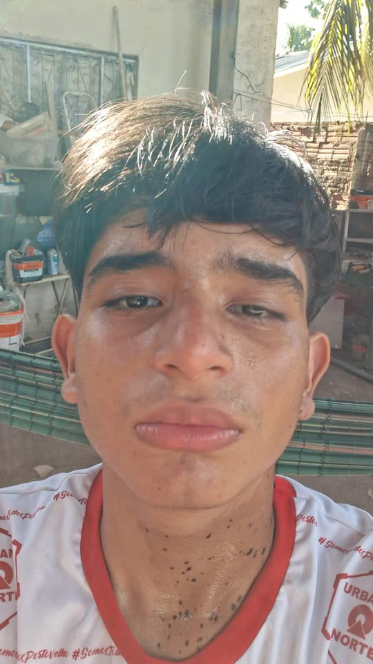
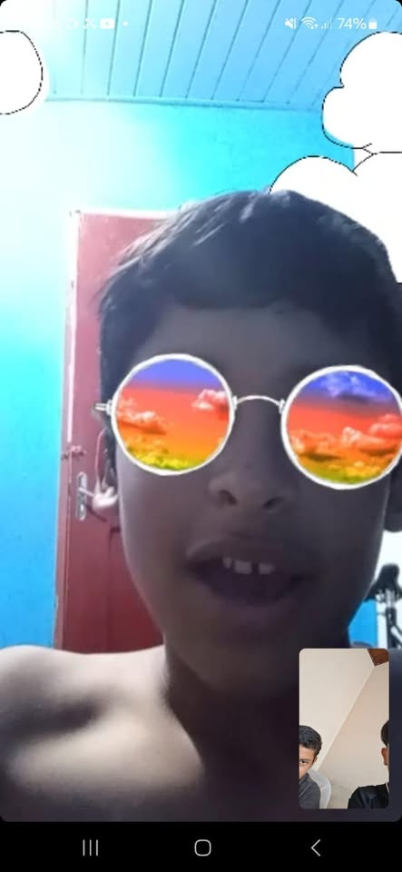
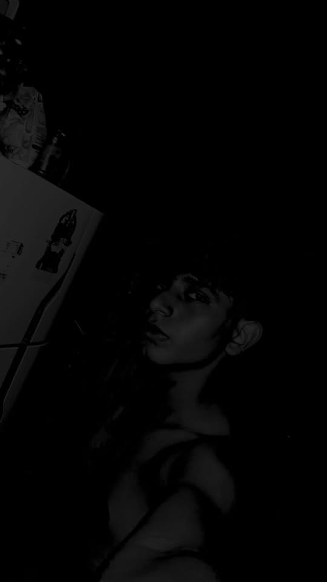
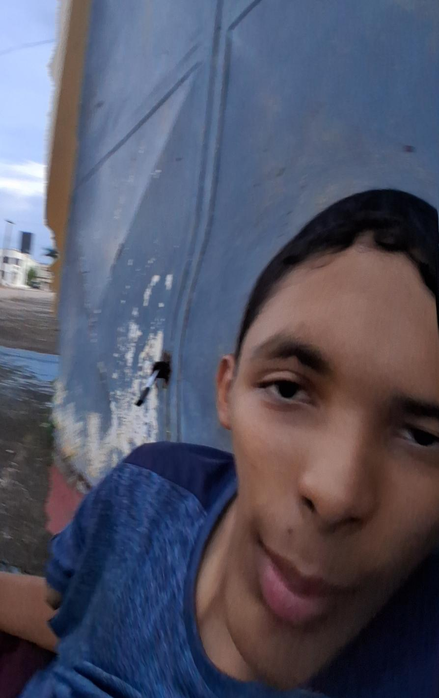
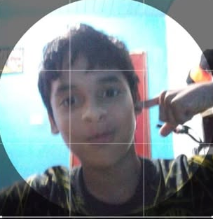
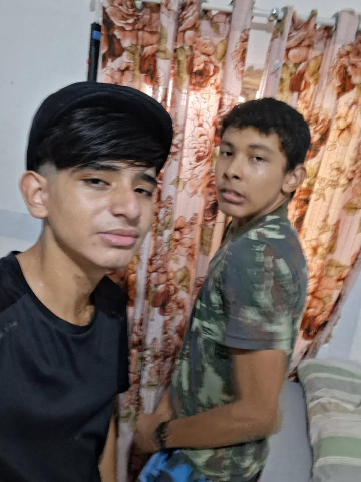

Em São João Bosco, tivemos alguns acontecimentos estranhos ocorrendo no bairro neste último mês, alguns como pessoas sensualizando para câmeras em pleno dia, outros também como anomalias estranhas e potencialmente perigosas para pedestres!

Acima temos a foto do mendigo denominado "Banhas".
Agora temos o que dizem ser o mendigo mais perigoso, contendo seus vários apelidos, tais como: H, Jesuá, Help.
Aqui temos uma anomalia à espreita no escuro, com sede de fome. obs: ELA SEMPRE ESTÁ COM FOME...
Aqui temos um ser perigoso, não só perigoso, como misterioso, algo com que se deve tomar cuidado. Um vacilo, e adeus...
Aqui temos o ser denominado de H, cujas informações são escassas e pouco se sabe. Apenas saiba, que por mais que tenha a cara de leso e amigável, ele tem seus lados obscuros...
Temos aqui a foto de Rennz e Banhas curtindo o momento. W